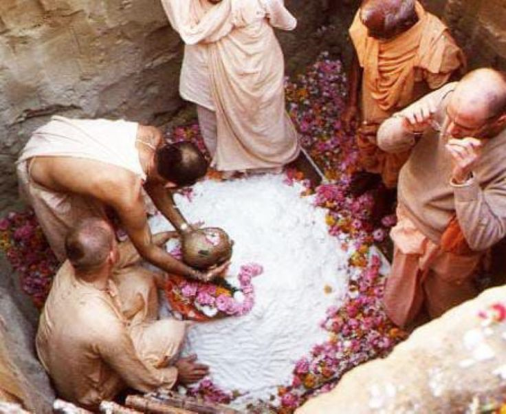

The body of an ācārya is never burnt to ashes

īhā yasya harer dāsye
karmaṇā manasā girā
nikhilāsv apy avasthāsu
jīvan-muktaḥ sa ucyate
"A person acting in the service of Kṛṣṇa with his body, mind and words is a liberated person, even within the material world."
~ Bhakti-rasāmṛta-sindhu 1.2.187
Therefore, one is forbidden to regard the guru as an ordinary human being (guruṣu nara-matir... nārakī saḥ). The spiritual master, or ācārya, is always situated in the spiritual status of life. Birth, death, old age and disease do not affect him. According to the Hari-bhakti-vilāsa, therefore, after the disappearance of an ācārya, his body is never burnt to ashes, for it is a spiritual body. The spiritual body is always unaffected by material conditions.
~ Śrīmad-Bhāgavatam 10.4.20 purport.
Jay Prabhupāda!